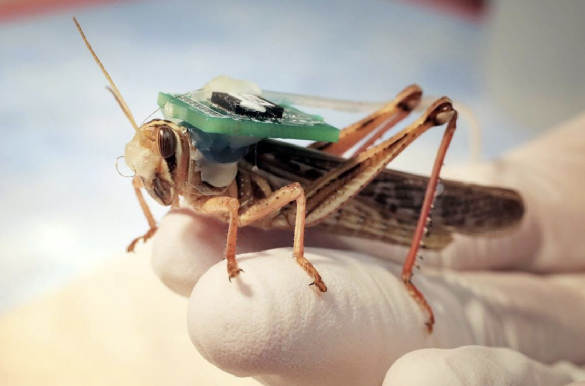
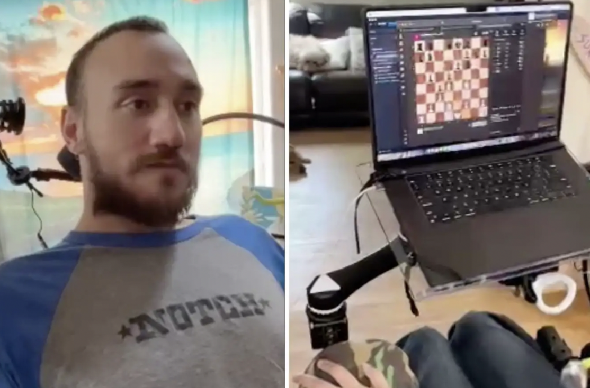

Cyborg Locusts
In February, NewScientist released an article explaining the intention of researchers to use locusts as bomb sniffers. Of course, locusts have not evolved to detect bombs and certainly do not have the capability to directly communicate to scientists of their findings. However, locusts do have the ability to identify specific smells, a characteristic enhanced if locusts travel in swarms. To utilise this trait, scientists got creative: the article by NewScientist explains how researchers plan to hijack the olfactory system of locusts by attaching biosensors to analyse the neurons being fired when these locusts are placed in a target location. There are several implications of this research. For instance, it isn’t new to us to understand that all tools can be used as weapons, in this case, using the characteristics of locusts to discover ways bombs can go undetected. However, another implication is the use of living organisms as ‘tools’. A commentary by MedicalDiscoveryNews on this research points out that locusts are great for this job as they are “disposable and inexpensive”. Can the same be said of a human?

Source: Bomb Sniffing Cyborg Locust - OneZero
Cyborg Humans: Neuralink
These biosensors on locusts remind us of something, brain chips on humans, more specifically, Elon Musk’s Neuralink. While it is easy to get into grips with the idea of using nanochips to read signals of neurons, it can't be said the same about using brain signals to move bionic parts. In March, after being paralysed from a diving incident, Noland Arbaugh had Neuralink implanted into his brain. A livestream showed Arbaugh playing online chess…with his mind? A reductive explanation of the science behind Neuralink it's the correlation between brain activity and brain waves. When asleep, low frequency delta waves (~2 Hz) are emitted by the brain. Waking up increases the frequencies to alpha waves (8-12 Hz). High order thinking, such as playing chess increases the frequency to gamma waves (30-100 Hz). Neuralink is trained to identify patterns between the range of gamma waves, for instance, the frequency to move a limb. Neuralink recognises these patterns when the patient practises a series of activities on a brain computer interface to associate a wavelength to an action. While using technology to correct disabilities allow many people to enjoy more human activities, are they necessarily becoming more human? At what point will we change from humans assisted by technology to robots (or cyborgs) with human skin?

Source: Neuralink - New Scientist
Limits to Optimising Humans
Why is it that we research science to develop technologies? To optimise the efficiency of our lives? If so, at what point are our lives completely optimised? To many people, removing all the flaws in our lives deprives us from a purpose to live. Since it is technology that has the power to replace the (intellectual) superiority of humans, it is no wonder that we commonly hear resistance towards technological development and the forfeiting of our control (currently even bodily control) to technology. Even with this unsettling future, science only ever moves forward. This means that it won’t be long until we won’t have to work for anything anymore. The only change we can make to our technological future is our mindset towards it: whether it is a future that does more harm or good to ‘human’ progression.